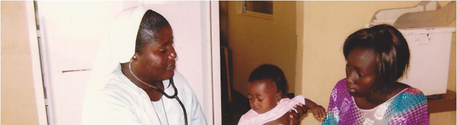

Nos Besoins
L’association collecte:
Courrier du Frère Dominique
Pour envoi aux dispensaires :
Pansements, sparadrap, compresses, tulles gras, bandes, compléments alimentaires, aliment parentéral, petits matériels médicaux (seringues, matériels de perfusion, cathéter, bonnets et masques de chirurgie, glucomètre, tensiomètre, stéthoscope, bistouri électrique, etc), lait en poudre pour bébé, poches pour urine.
Pour envoi aux ateliers des centres de formation :
Fils et aiguilles à tricoter, tissus légers, mercerie, nécessaires pour la couture.
Pour envoi à l’association « lunettes sans frontière » :
Paires de lunettes et Appareil auditifs.
Pour envoi aux écoles :
Petites fournitures scolaires.
Pour revente et financer notamment l’envoi des colis :
Petites brocantes et livres d’occasion.
Pour financer les projets :
- de constructions d’écoles,
- de dispensaires et de forage de puits,
- l’achat de médicaments en local,
- parrainer des classes d’élèves d’une école primaire à M’bour au Sénégal.